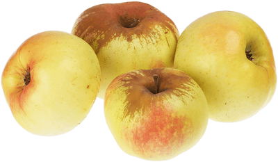

Яблоки Богатырь
Позднеосенний сорт крепких и крупных яблок, которые собирают с конца сентября и хранят до весны. У них очень ароматные кисло-сладкие плоды, плотные, хрустящие, умеренно сочные. Благодаря аромату отлично подходят и для пирогов, и для варений и компотов. Хороши еще и потому, что мякоть хорошо сохраняет свою структуру, а не превращается в кашу.
| Цвет плодов: | зеленовато-желтый |
| Высота дерева: | до 4м |
| Вес плодов: | до 350 гр |
| Вкус (сладкий, кислый и тд): | кисло-сладкий |
| Время созревания : | сентябрь- октябрь |
| Срок созревания | зимний |
| Срок хранения | до мая |